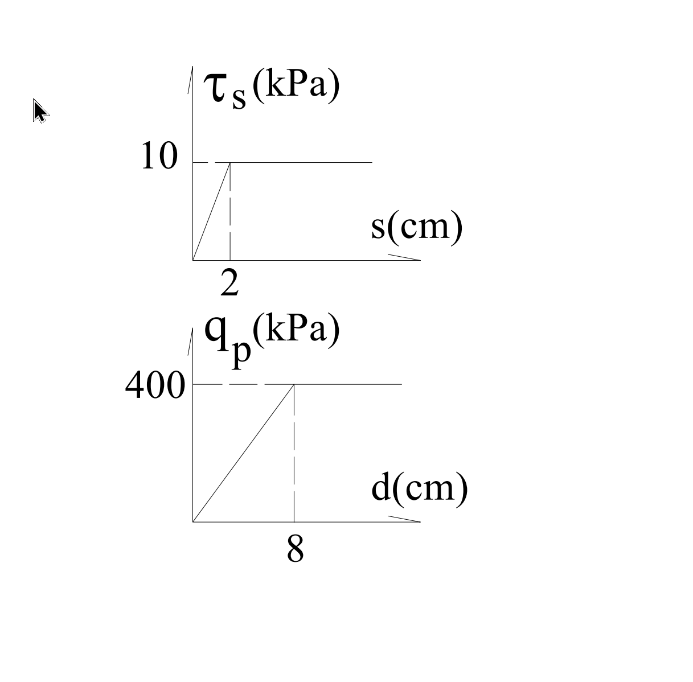

考題編號：SM-2005-4
主分類： SM-U2 深基礎之支承力與沉陷量
副分類：
分析法： 總應力法 / 變形相容分析
標籤： 深基礎 樁基礎 極限載重 位移限制 變形相容 工作荷重
1. 原始題目重述 (Problem Restatement)
有一墩基（pier）直徑為 $1.2\text{ m}$，長度為 $12\text{ m}$。其平均側向摩擦剪應力 $\tau_s$ 與剪位移 $s$ 關係，以及底部承載應力 $q_p$ 與位移 $d$ 關係如圖所示：
- $\tau_s - s$ 關係：位移 $2\text{ cm}$ 時達最大摩擦力 $10\text{ kPa}$，之前為線性。
- $q_p - d$ 關係：位移 $8\text{ cm}$ 時達最大端承力 $400\text{ kPa}$，之前為線性。
要求：
(一) 利用極限載重支承力（ultimate load bearing capacity）求工作荷重（working load）。（5 分）
(二) 利用位移限制為 $1\text{ cm}$ 與 $1.5\text{ cm}$ 分別求工作荷重。（10 分）
(三) 試檢討前述兩種方法之適當性。（10 分）

圖說：上方圖為平均側向摩擦剪應力 $\tau_s$ 與剪位移 $s$ 關係，線性增長至 $s=2\text{ cm}$ 達到極限 $10\text{ kPa}$；下方圖為底部承載應力 $q_p$ 與位移 $d$ 關係，線性增長至 $d=8\text{ cm}$ 達到極限 $400\text{ kPa}$。
2. 考題核心精神與出題者意圖 (Core Concepts & Examiner's Intent)
本題旨在測驗考生對於深基礎「承載力發揮機制」與「變形相容（Strain Compatibility）」的理解。
傳統的極限載重法是將極限側向摩擦力與極限端承力直接相加，再除以整體安全係數，但忽略了兩者要達到極限所需的變形量（位移）差異極大（通常側摩擦只需極小位移即可發揮，而端承力需要較大位移）。
出題者藉由給定荷重－位移曲線，要求考生利用變形限制（容許沉陷量）來反求工作荷重，並比較這兩種設計哲學的優劣與適當性，突顯以「位移控制」進行深基礎設計的重要性。
3. 解題戰略地圖與陷阱分析 (Strategic Roadmap & Trap Analysis)
戰略地圖：
- (一) 極限載重法：
- 從圖中讀取極限剪應力 $\tau_{s,max} = 10\text{ kPa}$ 與極限端承應力 $q_{p,max} = 400\text{ kPa}$。
- 計算樁身側面積 $A_s$ 與端面積 $A_p$。
- 計算極限承載力 $Q_u = \tau_{s,max} A_s + q_{p,max} A_p$。
- 除以安全係數 $FS$ (通常取 $FS=3$) 得到工作荷重 $Q_{all}$。 - (二) 位移限制法：
- 假設樁為剛體，各部位向下位移量 $\Delta = s = d$。
- 由圖形推導線性段方程式：$\tau_s = (10/2)s = 5\Delta$ 及 $q_p = (400/8)d = 50\Delta$。
- 分別代入 $\Delta = 1\text{ cm}$ 及 $\Delta = 1.5\text{ cm}$ 計算當時發揮的 $\tau_s$ 與 $q_p$。
- 計算對應之工作荷重。 - (三) 適當性檢討：
- 比較兩種方法的物理意義（是否考慮變形相容），並闡述為何後者較合理。
陷阱分析：
- 安全係數的假設： 題目在第(一)小題並未明確給定安全係數 $FS$，考生須自行假設合理值（如 $FS=3$）並寫出假設前提。
- 剛體假設： 第(二)小題須假設墩基本身為剛體（忽略彈性壓縮變形），才能認定側向剪位移 $s$ 與底部端點位移 $d$ 相等。
- 單位換算： 計算 $\tau_s$ 與 $q_p$ 的函數關係時要注意位移單位是 $\text{cm}$，而面積使用 $\text{m}^2$，算出的承載力單位為 $\text{kN}$。
3.5 變數層次分析 (Variable Hierarchy Analysis)
最終目標
分別利用極限承載力與位移限制求取樁之工作荷重，並評估兩方法之合理性。
本題關鍵公式（依計算順序）
極限承載力：
$$ Q_u = \tau_{s,max} (\pi D L) + q_{p,max} \left(\frac{\pi}{4} D^2\right) $$
工作荷重（極限法）：
$$ Q_{all} = \frac{\boxed{Q_u}}{FS} $$
應變相容下之承載力（位移 $\Delta$）：
$$ Q(\Delta) = \tau_s(\Delta) \cdot (\pi D L) + q_p(\Delta) \cdot \left(\frac{\pi}{4} D^2\right) $$
L1：題目直接給定
| 符號 | 數值 | 說明 |
|---|---|---|
| $D$ | $1.2 \text{ m}$ | 墩基直徑 |
| $L$ | $12 \text{ m}$ | 墩基長度 |
| $\tau_{s,max}$ | $10 \text{ kPa}$ | 側向極限摩擦應力 (發揮位移 $2\text{cm}$) |
| $q_{p,max}$ | $400 \text{ kPa}$ | 底部極限端承應力 (發揮位移 $8\text{cm}$) |
L2：需知識點推導
1. 幾何參數計算
| 符號 | 公式／來源 | 卡關? |
|---|---|---|
| $A_s$ | $A_s = \pi D L$ | |
| $A_p$ | $A_p = \frac{\pi}{4} D^2$ | |
2. 承載力隨位移之函數
| 符號 | 公式／來源 | 卡關? |
|---|---|---|
| $\tau_s(\Delta)$ | 當 $\Delta \le 2\text{ cm}$，$\tau_s = \frac{10}{2}\Delta$ | |
| $q_p(\Delta)$ | 當 $\Delta \le 8\text{ cm}$，$q_p = \frac{400}{8}\Delta$ | |
L3：深層知識（不懂就卡住）
| 知識點 | 說明 | 卡關? |
|---|---|---|
| 變形相容 (Strain Compatibility) | 樁身各點在不同深度或介面產生的位移，對應激發出不同程度的土壤剪力。忽略自身壓縮變形時，全樁位移量一致。 | |
| 整體安全係數之局限 | 傳統 $FS$ 無法反映摩擦力與端承力在同一工作位移下發揮程度不同的事實。 |
4. 步驟化詳細計算過程 (Step-by-Step Detailed Calculation)
(一) 利用極限載重支承力求工作荷重
-
計算樁側面積與端面積：
$$ A_s = \pi \cdot D \cdot L = \pi \cdot 1.2 \cdot 12 = 14.4\pi \text{ m}^2 \approx 45.239 \text{ m}^2 $$
$$ A_p = \frac{\pi}{4} \cdot D^2 = \frac{\pi}{4} \cdot (1.2)^2 = 0.36\pi \text{ m}^2 \approx 1.131 \text{ m}^2 $$ -
計算極限支承力 $Q_u$：
由圖中讀出：極限側摩擦應力 $\tau_{s,max} = 10 \text{ kPa}$，極限端承應力 $q_{p,max} = 400 \text{ kPa}$。
$$ Q_u = Q_{s,max} + Q_{p,max} = \tau_{s,max} A_s + q_{p,max} A_p $$
$$ Q_u = 10 \times 14.4\pi + 400 \times 0.36\pi = 144\pi + 144\pi = 288\pi \text{ kN} $$
$$ Q_u \approx 904.78 \text{ kN} $$ -
求工作荷重 $Q_{all}$：
題目未給定安全係數 $FS$，依一般深基礎設計慣例，通常取 $FS = 3$。
$$ Q_{all} = \frac{Q_u}{FS} = \frac{288\pi}{3} = 96\pi \text{ kN} \approx \boxed{301.59 \text{ kN}} $$
(註：若取 $FS=2.5$，則為 $361.91 \text{ kN}$，一般建議明列所假設之 $FS$ 值。)
(二) 利用位移限制求工作荷重
假設墩基本身為剛體（忽略樁身彈性壓縮變形），則樁側剪位移 $s$ 與底部位移 $d$ 皆等於總沉陷位移 $\Delta$。
由題意線性關係可得應力函數：
- 側摩擦：$\tau_s(\Delta) = \frac{10}{2} \cdot \Delta = 5\Delta \text{ (kPa)}$ ，其中 $\Delta \le 2\text{ cm}$
- 端承力：$q_p(\Delta) = \frac{400}{8} \cdot \Delta = 50\Delta \text{ (kPa)}$ ，其中 $\Delta \le 8\text{ cm}$
-
位移限制為 $\Delta = 1\text{ cm}$ 時：
$$ \tau_s = 5 \times 1 = 5 \text{ kPa} $$
$$ q_p = 50 \times 1 = 50 \text{ kPa} $$
對應之工作荷重：
$$ Q_1 = \tau_s A_s + q_p A_p = (5 \times 14.4\pi) + (50 \times 0.36\pi) $$
$$ Q_1 = 72\pi + 18\pi = 90\pi \text{ kN} \approx \boxed{282.74 \text{ kN}} $$ -
位移限制為 $\Delta = 1.5\text{ cm}$ 時：
$$ \tau_s = 5 \times 1.5 = 7.5 \text{ kPa} $$
$$ q_p = 50 \times 1.5 = 75 \text{ kPa} $$
對應之工作荷重：
$$ Q_{1.5} = \tau_s A_s + q_p A_p = (7.5 \times 14.4\pi) + (75 \times 0.36\pi) $$
$$ Q_{1.5} = 108\pi + 27\pi = 135\pi \text{ kN} \approx \boxed{424.12 \text{ kN}} $$
(三) 試檢討前述兩種方法之適當性
-
極限載重法（方法一）：
- 缺點： 此法將最大的摩擦力與端承力直接相加作為極限承載力。然而，從題圖可知，摩擦力發揮到極限僅需 $2\text{ cm}$ 位移，端承力發揮到極限卻需 $8\text{ cm}$ 位移。當基礎位移達到 $8\text{ cm}$ 時，側向土壤極可能已進入大變形破壞（甚至軟化/殘餘強度狀態）；而在工作荷重下，也無法保證樁的實際變形會落在結構容許的沉陷量內。
- 適當性： 較不適當。該法忽略了樁周土壤與端部土壤的「變形相容性（Strain Compatibility）」，可能高估了工作狀態下的實際安全度或導致過大的變形。 -
位移限制法（方法二）：
- 優點： 這種方法（或稱荷重—沉陷法）在給定同一位移時，計算各部分實際能激發的抵抗力。如此不僅確保了變形相容，也直接控制了工程結構最關心的「沉陷量」。
- 適當性： 較為適當且符合實務精神。在實際基礎設計中，結構物的容許沉陷量往往是控制設計條件的關鍵。根據地質參數建立荷重-位移曲線，再由容許沉陷量反推安全的工作荷重，能確保上部結構在長期使用下不會發生因變形過大而破壞的情況。
5. 關鍵爭議點與進階探討 (Critical Issues & Advanced Discussion)
- 整體安全係數與部分安全係數： 在極限載重法中，由於摩擦力與端承力的位移特性相差懸殊，有些規範會要求分別採用不同的安全係數，例如對端承力取較高的 $FS$（如 $FS_p=3$），對側摩擦取較低的 $FS$（如 $FS_s=1.5$ 或 $2$），再進行加總。此種考量稍微彌補了傳統極限法的缺陷。
- 樁身壓縮量的影響： 本題計算位移限制時，隱含了「樁基為剛體（Rigid Body）」的假設。但在實際深且長的樁基礎中，樁身受到載重會產生顯著的彈性壓縮變形（Elastic Shortening），導致樁頂的位移大於樁底的位移（$s \ne d$ 且隨深度變化）。實務上常使用 $t-z$ 曲線（側向荷重-位移）及 $Q-z$ 曲線（端部荷重-位移）進行有限差分分析，以得到更精確的沉陷量評估。